The problem Joint-embedding predictive architectures (JEPAs) learn world models directly in latent space, but unconstrained autoregressive predictors may contract the latent distribution over long rollouts. This contraction is a form of collapse, and it is a problem because each prediction is fed back as the next input: even a slight per-step contraction compounds over the horizon, progressively shrinking the latent distribution until distinct states can no longer be told apart.
The method We introduce Symplectic Hamiltonian JEPA (LeHami), which replaces the standard predictor with an action-conditioned Hamiltonian flow over a structured latent state (q, p) integrated using an exactly symplectic leapfrog step. We obtain the momentum-like component from temporal derivatives of the learned position-like representation, providing an explicit second-order state for prediction and control. The idea comes from physics, where Hamiltonian mechanics governs dynamics through a single scalar H and preserves phase-space volume at every step. Machine-learning methods have since learned the Hamiltonian from data, such as Hamiltonian Neural Networks (Greydanus et al., 2019), Symplectic ODE-Net (Chen et al., 2019) and Hamiltonian Generative Networks (Toth et al., 2019). LeHami brings this prior to JEPA world models, learned end to end from pixels and integrated exactly symplectically.
The guarantee Because the leapfrog step is symplectic, this construction preserves phase-space volume at every rollout step as a consequence. This tackles the problem of collapse directly: it rules out uniform contraction, asymptotically stable fixed points, and merging of distinct latent states, independently of the learned parameters or action sequence.
The results On the conservative pendulum, LeHami preserves latent volume along the rollout, whereas LeWM (Maes et al., 2026), the unconstrained JEPA world model we compare to, contracts it steadily, losing log-volume linearly with the horizon. Consistent with this, LeHami predicts velocity better throughout and angle better at long horizons. The learned flow also supports accurate integration at unseen sub-frame step sizes and numerical time reversal. On the actuated pendulum, LeWM reaches the goal angle more often, but it captures signed velocity only when its temporal window is explicitly untied. LeHami instead captures the full state, angle and signed velocity alike, by construction, paving the way towards velocity-constrained planning and FLOP-efficient replanning. These results show how geometric structure can provide inference-time guarantees that are complementary to representation regularization in latent world models.
- Symplectic latent world model (LeHami): We introduce an end-to-end trainable JEPA framework equipped with a learned separable Hamiltonian predictor over a canonical latent split (q, p). We prove that its volume-preserving step eliminates three specific collapse modes during evaluation rollouts across arbitrary horizons and actions.
- Continuous-time & time reversibility: We show that a single trained predictor Hφ acts as a continuous vector field, enabling sub-frame time integration without performance degradation and achieving numerical time-reversal with round-trip error below 10−4 % without architectural modifications.
- Complete physics representation & principled planning: By construction rather than by architectural tuning, LeHami represents the full state through exact geometric structure. Across conservative and actuated pendulum environments, we empirically show that LeHami accurately recovers full system dynamics. This paves the way towards compute-efficient planning to goals that specify the full physical state: position and velocity.
The idea, from the intuition
Think of a pendulum. Its angle alone does not tell you what happens next: you also need how fast it is swinging. Physics bundles the two into a phase space, a position-like coordinate q and a momentum-like coordinate p, and the motion is a flow through that space generated by a single scalar H. What matters for us is not that this flow conserves something, but that it is symplectic: it preserves the oriented area spanned in each (q, p) plane, and with it phase-space volume at every step. A cloud of states can be stretched and sheared, but never squeezed. Crucially, this persists under actuation, provided the action enters the Hamiltonian.
A predictor without structure takes a latent state and evolves it to the next state. Nothing stops that network from squeezing the latent space a little at every step; over a long rollout the squeeze compounds, distinct states drift together and the information that told them apart is gone.
LeHami gives the latent space a symplectic phase-space structure directly. The encoder maps each frame to a point (q, p), and the predictor is a learned Hamiltonian Hφ(q, p, u) = Kφ(p) + Vφ(q, u), where u is the control action vector (for the pendulum, the applied torque), advanced by a leapfrog step. The action enters through the potential, so a torque literally tilts the energy landscape the state moves on.
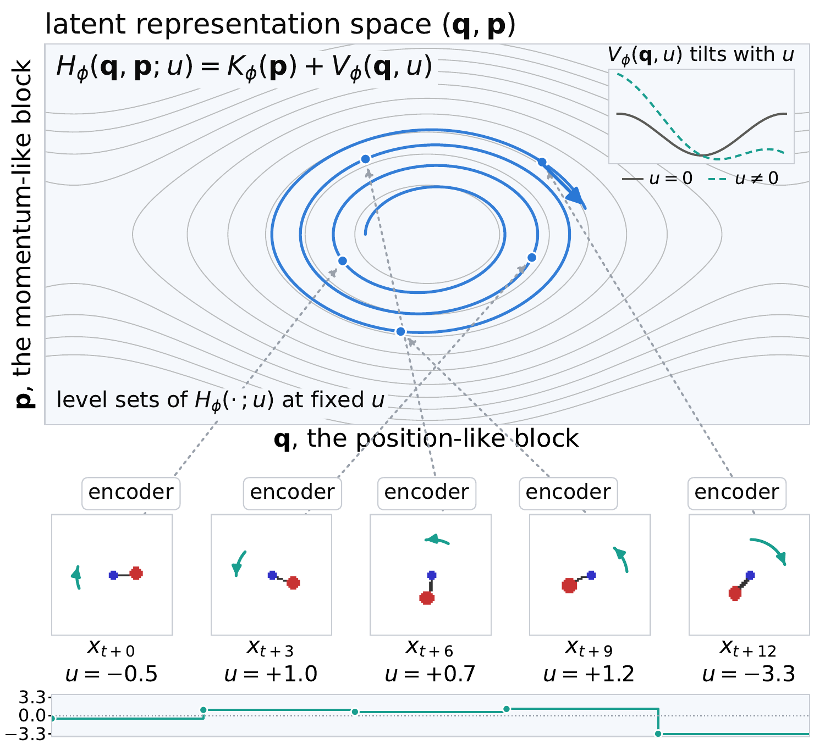
The diagram shows how the actions move the state across levels. In the conservative case, a trajectory stays on one level set of Hφ (the grey lines). With actuation, the action ut enters the potential, so at every step the symplectic update follows the level sets of the Hamiltonian defined by the current action. The action therefore selects which level set the state moves along, and a sequence of actions carries the state from level to level, tracing the rollout (the blue curve in the upper left of the diagram). Volume preservation is a property of each step, not of a particular level, so it survives the change of level for every action sequence, provided ut is held constant within a step.
Three consequences of the structure
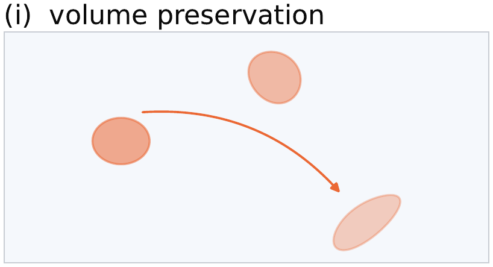
1 · Exact volume preservation
Symplectic integration preserves phase-space volume by construction, provably eliminating some representation collapse modes during evaluation rollouts for arbitrary action sequences.
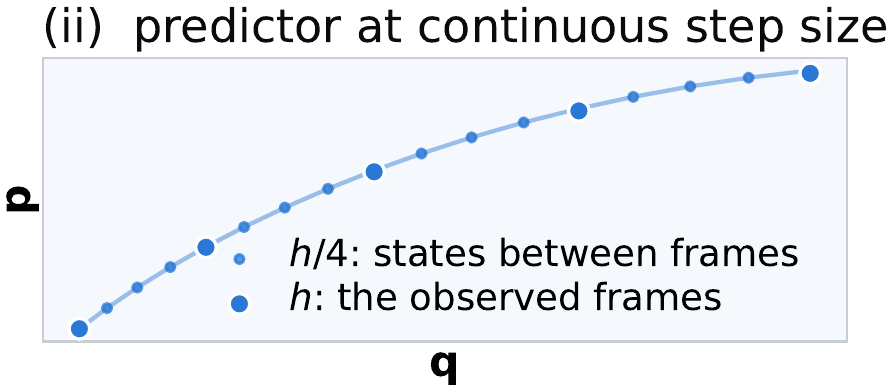
2 · Continuous-time step size
Because Hφ parameterizes a continuous vector field, a single trained model can be integrated at arbitrary step sizes Δt without retraining, facilitating training on multi-frequency data and non-uniform planning grids.
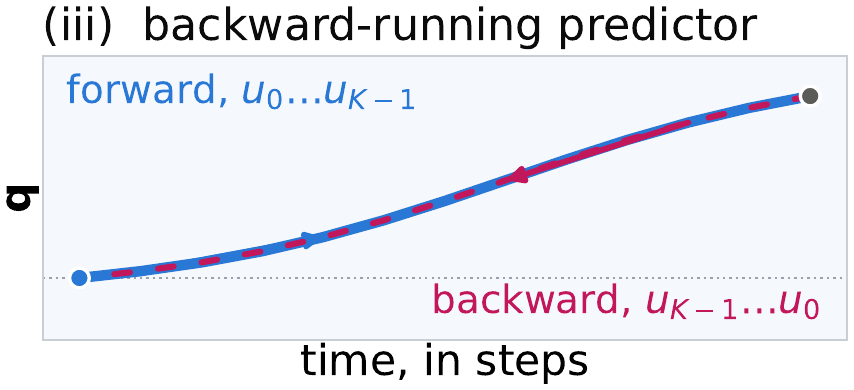
3 · Time-reversibility
Flipping time (t → −t) and reversing the action sequence allows backward-in-time rollouts, serving as an essential primitive for computing backward reachable tubes and online safety guarantees in optimal control.
A learned energy that tracks the real one (the conservative case)
This is the special case of a conservative system, with no actuation (u = 0). Under actuation the controller does work and Hφ is no longer constant, although the step stays symplectic. In the conservative case the learned Hφ is not a physical energy: it is learned from pixels alone, with no energy supervision, so its offset and scale are arbitrary (the values below sit around −60). It is nevertheless conserved along the rollout, and the level it sits at orders the episodes the way the true energy does. Each of the four pendulums below swings with a different energy; the learned Hφ of each is almost constant over 96 rollout steps.
The relation between the two is monotone but not linear: in the bottom-right panel the points bend and scatter around the trend, and the correlation of 0.98 measures how well they follow it, not that they lie on a line. This is expected, because any increasing function of a conserved quantity is itself conserved, so Hφ is only identified up to such a reparametrization.
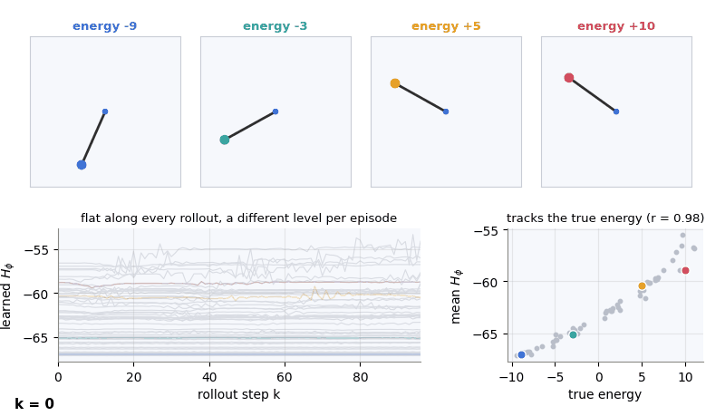
Architecture
We train on unannotated trajectories of observations [x0, …, xT−1] and actions [u0, …, uT−1]. LeHami has two learned components, an encoder Encθ and a Hamiltonian flow (Ham flowφ) that replaces the predictor, joined by the zero-parameter Savitzky–Golay (SG) stencil that reads the momentum off the encoder trajectory:
Hamiltonian flow: (q̃t+1, p̃t+1) = Ham flowφ(qt, pt, ut)
where W(t) is a window of W+1 frames that includes xt. The flow advances the state by one step of Hamilton's equations for a learned scalar Hφ(q, p, u), and θ and φ are trained end-to-end by backpropagating through the rollout, so the encoder is shaped to produce latent states that admit this structured evolution.
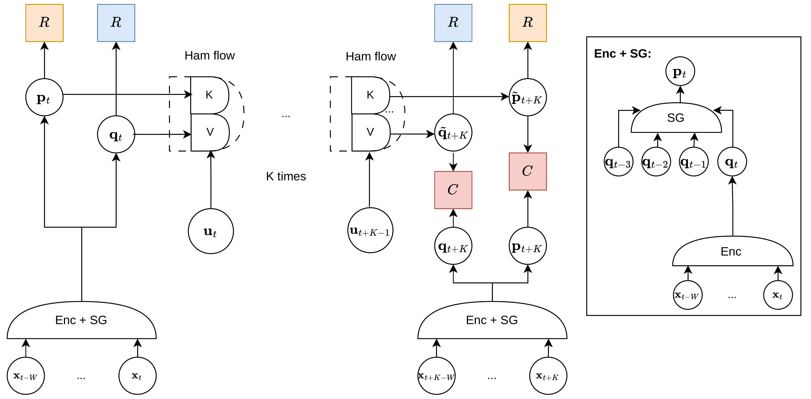
The integration. We leverage the leapfrog (Störmer–Verlet) integrator, which is second-order accurate and, crucially, exactly symplectic. For a separable Hamiltonian Hφ(q, p, u) = Kφ(S−1p) + Vφ(q, u), with S = diag(eσ), the update over a time step Δt is
q̃t+1 = qt + Δt S−1 ∇Kφ(S−1p̃t+½)
p̃t+1 = p̃t+½ − (Δt/2) ∇qVφ(q̃t+1, ut)
where σ is learned and absorbs the relative scale of q and p, which the self-supervised objective leaves undetermined. Because S is a constant linear rescaling, the flow remains exactly symplectic.
Action-conditioned Hamiltonian. Under actuation the controller does work and Hφ is no longer constant, but symplecticity is a property of the map. We condition the potential on the action so Vφ = Vφ(q, u) and the generalized force F(q, u) = −∂Vφ/∂q is a q-gradient for every action by construction. Separability is untouched and the leapfrog stays exactly symplectic for every action sequence, provided only that ut is constant within a step.
How p is obtained. We enforce the canonical relation p = dq/dt by computing p as the temporal derivative of the generalized coordinates q via a fixed Savitzky–Golay stencil on the encoder trajectory: a least-squares quadratic fit over q that is then differentiated at time step t. The stencil is linear with constant coefficients, so it adds no learned parameters and cannot itself collapse.
Multi-step learning. We consider multi-step prediction over a K-step horizon by iteratively applying the Hamiltonian flow. The loss is the average MSE across the trajectory. Given an anchor of A time steps used to form the embedding of the first time step of the episode, and K self-fed leapfrog steps, the loss is
where the first term is the prediction loss in the position-like embedding, the second is the prediction loss in the momentum-like embedding weighted by λp, and the last term S is the regularizer, which in principle can be any (e.g., SIGReg) and acts on ground-truth embeddings, never on the rollout.
Empirical validation of LeHami
We evaluate our approach on two pendulum environments rendered as 64×64 RGB images. In the conservative pendulum there is no actuation, and episodes vary across three rod lengths. In the actuated pendulum, a recorded sequence of scalar torques (ut)t, drawn uniformly, does work on the system, so energy is no longer conserved; episodes vary across the same three rod lengths and three masses, since under actuation the mass sets the response to the torque. In both environments the true dynamics preserve phase-space volume, which is the property LeHami builds in; the actuated pendulum tests it once energy conservation no longer holds.
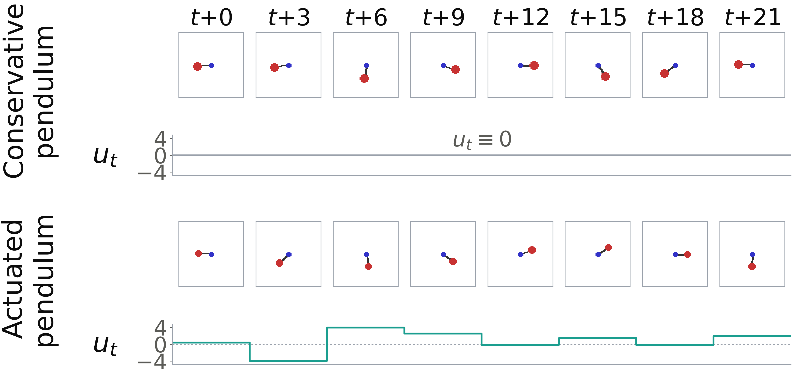
Results
Long-horizon prediction and latent volume
On the conservative pendulum, the angle predictions of the two models are level early and LeHami pulls ahead from K ≈ 11 on. Regarding the prediction of velocity, the middle panel shows that LeHami leads by 2.8× over the first ten steps and 1.3× at the end of the horizon, that is, its velocity error is 2.8× smaller than that of the baseline LeWM (Maes et al., 2026) over the first ten rollout steps.
To assess whether LeHami avoids representation collapse over long horizons, we directly evaluate the phase-space volume contraction of the latent predictor during rollouts. The right panel tracks the normalized cumulative log-determinant across a K-step rollout, (1/n) Σi=0..K−1 log|det J(zi)|, where J(zi) denotes the Jacobian of the one-step predictor and n is the latent dimension. This quantity directly measures phase-space volume change under iterated predictions. LeHami maintains an exactly constant value of 0 (|det J(zi)| = 1 for all zi), avoiding rollout volume contraction. Conversely, LeWM exhibits a steady linear decline in cumulative log-volume, indicating continuous contraction during rollout; the same holds for the full phase-space volume of its three-embedding context.
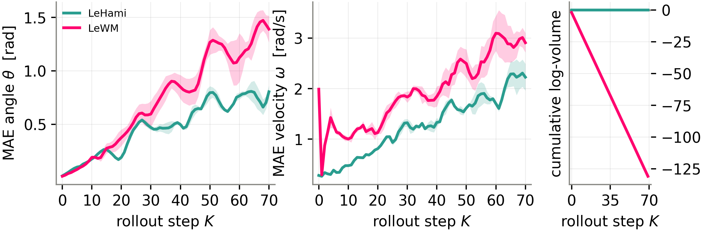
The animation below shows where this curve comes from. A single latent state cannot collapse, since it simply moves to another point; collapse means that many distinct states get merged. So at each rollout step we take a small disc of nearby latent states around the current state (dashed circle) and apply the one-step map to every point of it. Because the disc is small, the map acts on it through its Jacobian J, which turns the disc into an ellipse (filled). The axes of the ellipse are the singular values of J, and its area relative to the disc is |det J|, the product of those singular values. For LeHami, |det J| = 1: the disc is stretched in one direction and squeezed in another, but its area is preserved, so nearby states stay distinguishable. For LeWM, the smallest singular value is essentially zero, so |det J| ≈ 0 and the disc is flattened onto a line at every step, merging distinct states. The curve at the bottom accumulates log|det J| over the rollout, which is the same cumulative log-volume as in the figure above. Values are averaged over 45 test episodes.
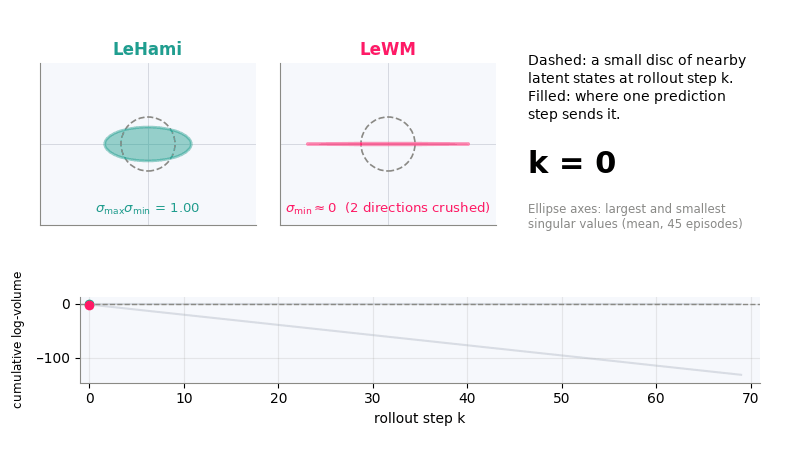
LeHami is a world model with time re-stepping and reversal
LeHami is a world model that runs at any rate, and in either direction, because the Hamiltonian predictor Hφ is a continuous-time vector field. We showcase this capability by holding the learned Hφ fixed and integrating it at sΔt, taking 1/s sub-steps per observed frame, and compare against a Runge–Kutta integration of the true ODE from the same initial condition. Refining below the observation rate leaves the predicted trajectory invariant (left); coarsening breaks it, as an explicit symplectic integrator leaves its stability band. The same property makes the rollout reversible. The right panel shows the round-trip error of the latent state after rolling K steps forward and back with Δt → −Δt, which stays below 10−4 %.
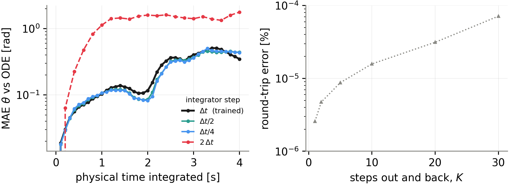
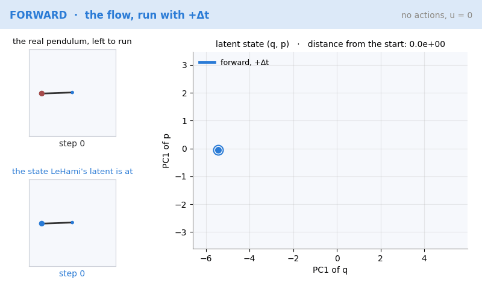
Planning on the actuated pendulum
We plan at inference time by searching for an action sequence that brings the latent prediction at the horizon to the latent of a goal frame, using the cross-entropy method with model-predictive control. Goals are 30 steps ahead and contain a position clause, a velocity clause, or both. The budget is capped at 15 TFLOP per episode, so each model trades the cost of one solve against how often it replans.
Both models decode the rod's mass and length along the whole rollout, so differences in planning do not come from failed system identification. What differs is how velocity enters the latent:
- LeWM, one frame (W=1): the per-frame goal embedding carries no velocity, so it fails the velocity clause.
- LeWM, window with tied weights: captures speed but is blind to direction, since it maps ±ω to the same latent. 92 % of the goals need the correct sign.
- LeWM, window with untied weights: breaks time symmetry, captures signed velocity and reaches the highest success, at a high cost per solve that forces it to replan less often.
- LeHami: signed velocity is guaranteed by the structure, since p is read off the encoder trajectory with no extra parameters, and the Hamiltonian flow has 2.23M parameters against 3.31M for LeWM's transformer and projection.
| Clause | Model | Success | TFLOP | Replanning |
|---|---|---|---|---|
| Position | LeWM W=1 | 0.800 ± 0.019 | 12.87 | R=9, 4 solves |
| LeWM W=3 (tied) | 0.633 ± 0.020 | 13.65 | R=9, 4 solves | |
| LeWM W=3 (untied) | 0.696 ± 0.016 | 13.65 | R=9, 4 solves | |
| LeHami | 0.480 ± 0.084 | 8.05 | R=9, 4 solves | |
| Velocity | LeWM W=1 | 0.184 ± 0.027 | 8.78 | R=15, 2 solves |
| LeWM W=3 (tied) | 0.473 ± 0.014 | 13.65 | R=9, 4 solves | |
| LeWM W=3 (untied) | 0.800 ± 0.058 | 13.65 | R=9, 4 solves | |
| LeHami | 0.527 ± 0.019 | 10.98 | R=6, 5 solves | |
| Position and velocity | LeWM W=1 | 0.142 ± 0.033 | 12.87 | R=9, 4 solves |
| LeWM W=3 (tied) | 0.400 ± 0.037 | 9.31 | R=15, 2 solves | |
| LeWM W=3 (untied) | 0.636 ± 0.025 | 13.65 | R=9, 4 solves | |
| LeHami | 0.304 ± 0.088 | 10.98 | R=6, 5 solves |
Goal-reaching success on the actuated pendulum, by clause: best success probability per model at a matched budget of at most 15 TFLOP per episode, mean ± s.d. over three model seeds. The success of a do-nothing policy (u = 0) is 0.060, 0.240 and 0.040 on the three clauses. Bold numbers mark the best model within a clause. R is the number of steps executed before replanning.
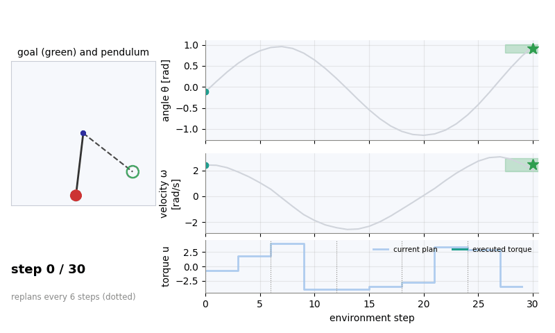
Conclusion
We introduced LeHami, a world model architecture that rigorously preserves the geometric properties of second-order physical systems. Its exact symplectic step provides structural guarantees: exact volume preservation that provably eliminates some rollout collapse modes and continuous-time integration with time-reversal. We have shown empirically on the conservative pendulum that LeHami preserves latent volume along the rollout, whereas LeWM contracts it steadily, losing log-volume linearly with the horizon. Consistent with this, LeHami predicts velocity better throughout and angle better at long horizons. With actuation, LeWM reaches the goal angle more often, but it captures signed velocity only when its temporal window is explicitly untied. LeHami instead captures the full state, angle and signed velocity alike, by construction, paving the way towards velocity-constrained planning and FLOP-efficient replanning.
Limitations and future work. First, while our latent architecture maintains exact volume preservation under actuation, strongly dissipative physical systems (e.g., heavy friction) exhibit phase-space volume contraction. Thus, extending LeHami to these regimes, e.g., via port-Hamiltonian extensions, is a natural direction for future work. Second, LeHami specifically targets velocity-aware tasks, whereas purely static pose tasks are served well by spatial-focused, unconstrained predictors. Finally, replacing our zero-overhead SG stencil with a learned momentum-like embedding offers a clear path to potentially improve performance without sacrificing long-horizon phase-space stability.
Code and reproducing the paper
The repository contains the model, training and evaluation code, the dataset generators and one script
per block of the paper. Every figure and table is produced end to end by a single notebook from the
frozen numbers in paper_figures/data/.
git clone https://github.com/rominay/LeHami
cd LeHami
uv sync
uv run pytest lehami/tests/
bash lehami/experiments/conservative_multi_rod.shgithub.com/rominay/LeHami · released under the Apache License 2.0.
Citation
@misc{yalovetzky2026lehami,
title = {LeHami: Symplectic Latent Dynamics for World Models},
author = {Yalovetzky, Romina and Balestriero, Randall and LeCun, Yann},
year = {2026},
note = {Preprint}
}